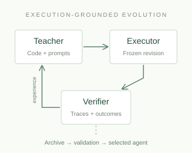

RESEARCH PROJECT · 2026
RSI-ICD: self-evolving agents for clinical codingRSI-ICD：面向临床编码的多智能体自进化
Improving the executable agent through paired feedback, code revision, and reusable experience.以配对反馈、代码修订和可复用经验，持续改进智能体的执行方式。
First-author manuscript submitted to Computer Methods and Programs in Biomedicine.第一作者论文，在投期刊：Computer Methods and Programs in Biomedicine。
Research question研究问题
Clinical coding requires evidence to survive extraction, terminology retrieval, and code selection. RSI-ICD studies how automatic revision of an agent’s prompts and executable structure changes both coding quality and computational cost, while keeping model weights fixed.
临床编码要求病历证据在抽取、术语检索和编码选择之间完整传递。RSI-ICD 在固定模型权重的条件下，研究自动修订提示词与可执行结构如何共同改善编码质量和计算开销。

What I built核心实现
- Teacher–Executor–Verifier coordination. The teacher changes role prompts, Python control flow, retrieval, and information transfer. Completed revisions are frozen before execution.教师—执行器—验证器协作。教师修改角色提示词、Python 控制流、检索与信息传递结构，每次修订完成后冻结版本再执行。
- Execution-grounded experience. Source diffs, before/after traces, scores, and resource use inform conditional lessons that can be revised or retired in later rounds.执行反馈驱动的经验更新。结合代码差异、前后执行轨迹、评分和资源消耗，提炼带适用条件的经验，并在后续轮次修订或淘汰。
- Independent selection and evaluation. Separate evolution, validation, and test partitions; preserve initial references; compare baselines under shared scoring rules.独立选优与评测。分离进化、验证和测试数据，保留原始参考答案，并以统一评分规则比较基线。
Selected results实验结果
| Metric指标 | ICD-9 | ICD-10 |
|---|---|---|
| Test records测试病例 | 200 | 200 |
| Mean micro-F1 gainMicro-F1 均值提升 | +6.53 pp | +9.90 pp |
| Execution-token reduction执行 token 降幅 | 55.2% | 48.1% |
Compared with the initial agent. F1 is the mean of diagnosis and procedure micro-F1 on the full test cohort, with failures scored as empty predictions. Execution tokens are measured on 192 / 188 common-success records and exclude optimization costs.相对初始 Agent。F1 为全量测试集上诊断与操作 Micro-F1 的均值，执行失败按空预测计分。执行 token 基于 192／188 例共同成功病例统计，不含优化成本。
Three independent ICD-10 optimization runs reproduce gains of 7.81–9.59 percentage points over the initial agent. Under a joint full-validation and format-recovery control, full-program revision uses 48.8% fewer execution tokens than prompt-only revision; the 1.55-point F1 difference has a confidence interval spanning zero.
三次独立 ICD-10 优化相对初始 Agent 均取得 7.81–9.59 个百分点的提升。在全验证集选优与统一格式恢复的联合控制下，代码与提示词联合修订较仅修订提示词减少 48.8% 的执行 token；F1 差值为 1.55 个百分点，其置信区间跨零。
Materials研究材料
The manuscript is under submission. The implementation repository is currently private; please contact me to discuss the method or request access to shareable materials.
论文目前在投，代码仓库暂为私有。欢迎联系交流方法，或申请获取可分享的研究材料。
Contact about RSI-ICD交流 RSI-ICD 研究